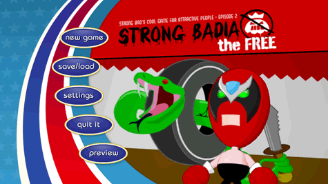

Sélectionnez "StrongBadia the Free" dans votre écran du menu Wii. L'écran de lancement se chargera. Pour lancer l'épisode, placez le Pointer sur Start et appuyez sur  . Ceci fera apparaître le menu principal.
. Ceci fera apparaître le menu principal.

Le menu principal vous donne les options suivantes :
- New Game: Commencer le jeu depuis le début ou jouer au tutoriel
- Save/Load: Sauvegarder une partie en cours ou ouvrir une partie sauvegardée
- Settings: Changer le niveau d'indices, afficher ou supprimer les sous-titres et régler les paramètres audio
- Quit It: Quitter la partie et retourner au écran du menu Wii
- Preview: Découvrez un aperçu du prochain épisode de Strong Bad's Cool Game for Attractive People
Pour accomplir ces tâches, visez la rubrique correspondante et appuyez sur
.
Visez New Game et appuyez sur . Vous pouvez choisir de lancer l'épisode ou de jouer au tutoriel. Si ce genre de jeu est nouveau pour vous ou si vous voulez vous renseigner sur le fonctionnement des commandes, commencez par le tutoriel.
Visez Save/Load et appuyez sur . Vous avez trois emplacements et une "sauvegarde automatique" qui entre en action à certains moments du jeu. Chaque sauvegarde automatique écrase la sauvegarde précédente, donc si vous voulez pouvoir revenir en arrière et rejouer différentes parties du jeu plus tard, souvenez-vous de sauvegarder dans un des autres emplacements. Pour sauvegarder votre partie, visez Save près d'un des emplacements et appuyez sur . Pour charger une partie sauvegardée, visez Load près de l'emplacement correspondant et appuyez sur .
Visez Settings et appuyez sur . Cet écran vous permet de modifier vos paramètres de jeu. Pour changer ces paramètres, visez les touches affichées à l'écran et appuyez sur . Voici vos options :
- Give Hints: Règle le niveau d'indices, pour que le jeu sache quand vous donner un petit coup de pouce dans la bonne direction si jamais vous êtes coincé(e) lors d'une partie.
- Subtitles: Affiche/Supprime les sous-titres qui apparaissent quand les personnes parlent.
- Pop-up Text: Affiche/Supprime le texte qui apparaît quand vous déplacez le Pointeur sur un objet avec lequel Strong Bad peut interagir. (Même avec le texte en fenêtre supprimé, le Pointeur s'animera quand vous passerez au-dessus de quelque chose qui peut être utilisé.)
- Music: Règle le volume de la musique de fond de la partie.
- Voice: Règle le volume des dialogues parlés.
- Sounds: Règle le volume des effets sonores du jeu (comme les bruits de pas).
Visez Quit It et appuyez sur . Cet écran vous permet de quitter le jeu. Vous pouvez choisir de revenir au menu principal du jeu ou d'aller au écran du Menu Wii.
Pointez sur Preview et appuyez sur pour voir un aperçu du prochain épisode de Strong Bad's Cool Game for Attractive People.